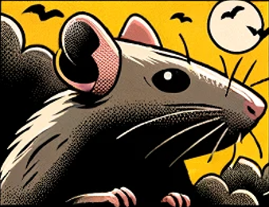
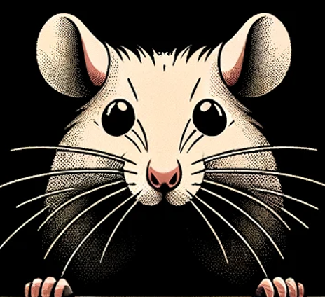
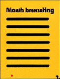

This week's featured rat is the moon rat, not from space, but Southeast Asia's rainforests. With a silver coat and a love for nocturnal activities, it stands out from typical city rats. It's skilled at navigating through the forest using minimal moonlight. To be honest, it's just a unique rat with a cool name.


Meanice
Diving deep into the mythos of "Meanice," this captivating tale blends age-old rodent legends with a modern twist. Through intricate plots and compelling character arcs, readers journey to discover if the legendary Meanice is myth or reality. An unforgettable read, "Meanice" is a triumph in storytelling that's left us at RNN utterly enchanted.